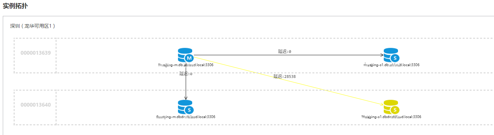
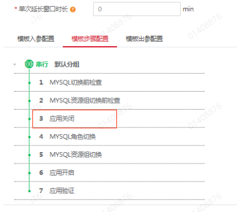

mysql的主备从入门到入土
本文有xmind，配合观看，效果更佳：Mysql主备从入门到入土.xmind
binlog 可以用来归档，也可以用来做主备同步，那么具体是怎么做主备同步的呢？为什么备库执行了 binlog 就可以跟主库保持一致了呢？
什么是主备
传统的单机架构在目前的应用场景中不足以应对，后来才衍生出高可用，解决单点问题。mysql也不例外
主备同步（主备一致）的流程
flowchart LR 开始((开始))-->undologmem[undolog
mem] subgraph masterA undologmem-->datamem[data
mem] datamem-->redologprepare[redolog
prepare] redologprepare-->binlog[binlog] binlog-->redologcommit[redolog
commit] binlog-->dump_thread[dump_thread] bg_thread[bg_thread]-->undologdisk[undolog
disk] undologdisk-->datadisk[data
disk] end redologcommit-->ack((ack)) subgraph masterB dump_thread-->io_thread[io_thread] io_thread-->relaylog[relaylog] relaylog-->sql_thread[sql_thread] sql_thread-->data[data] end
上图是主备切换的大致流程图，包括undolog，redolog，和binlog的大致流程（复习一下redolog和binlog的二阶段提交）。
从左到右的流程是：
- masterA主库接收到Client过来的更新请求，先记录undolog，然后写data缓存，记录redolog和binlog。
- 当binlog记录成功之后，在masterA主库中有一个线程dump_thread，这个dump_thread线程是用来维护和masterB备库的长链接。
- 在masterB备库中，也有一个io_thread线程，负责与主库建立长链接
- masterB备库会向masterA主库请求同步binlog，备库会告诉主库需要同步的位置
- masterA主库会按照masterB备库传过来的位置，读取binlog，发送给masterB备库
- masterB备库，接收到masterA主库传过来的binlog，先暂存到本地文件，称为中转日志 relaylog
- 在备库B中有一个线程sql_thread，会负责解析中转日志relaylog，并执行
两种主备架构
主备架构有两种，并且两种不同的架构，主备同步的流程有一些区别
M-S结构的主备同步流程
flowchart TD client-->mysqlA mysqlA-->mysqlB\nreadonly
M-S结构如图所示，mysqlB是只读的，作为A的备库。
在主备切换的时候，会把client的请求转发到B
同时将mysqlA设置为readonly，设置为mysqlB的备库（修改主备关系）
当然在主备切换的时候，会有问题，比如把client的请求转发到B，但是此时B是readonly的，写不进去数据怎么办？
双M结构的主备同步流程
flowchart TD client-->mysqlA mysqlA-->mysqlB\nreadonly mysqlB\nreadonly-->mysqlA
双 M 结构和 M-S 结构，其实区别只是多了一条线，即：mysql A 和 mysql B 之间总是互为主备关系。这样在切换的时候就不用再修改主备关系。
循环复制问题
但是双M结构会有一个问题，就是主备同步的时候：
- mysqlA把binlog发给mysqlB，mysqlB执行完binlog之后，又会生成binlog（通过参数log_slave_updates控制执行relaylog执行后是否产生binlog）
- mysqlB再把binlog发给mysqlA，mysqlA又会执行…这就是双M结构的循环复制问题
解决这个问题，也很简单，思考一下：
- 方案一：在mysqlB执行完之后，不生成binlog不就完事了。
- 方案二：在mysqlB执行完之后，生成了binlog，但是不发给mysqlA不就完事了。
- 方案三：在mysqlB执行完之后，生成了binlog，发给mysqlA，但是mysqlA不执行不就完事了。
在上面三个方案，其实都可以解决循环复制的问题，
- 对于方案一，可以通过
log_slave_updates这个参数控制relaylog执行后是否产生binlog，但是呢，我们建议打开备库的binlog。 - 对于方案二，mysql没采用这个方法，不知道为什么。
- 对于方案三，mysql采用的这个方式，mysql具体是怎么实现的呢？
方案三的实现：
在mysql的binlog中，记录了一个叫做server id 的东西，如下是在ROW格式下的binlog（截取了部分）：
C:\Program Files\MySQL\MySQL Server 8.0\bin>mysqlbinlog.exe -vv "C:\ProgramData\MySQL\MySQL Server 8.0\Data\xxxxx-bin.000002" --start-position=5043 --stop-position=5300
# at 5043
#221101 15:21:11 server id 1 end_log_pos 5122 CRC32 0x72f668e7 Anonymous_GTID last_committed=17 sequence_number=18 rbr_only=yes original_committed_timestamp=1667287271257812 immediate_commit_timestamp=1667287271257812 transaction_length=287
SET @@SESSION.GTID_NEXT= 'ANONYMOUS'/*!*/;
可以看到，是有 server id 1 这个内容的，就表示当前这个binlog是在server=1这个库上产生的。
server id在mysql主备中，不同的实例必须是唯一的，如果它们相同，那么它们不能构成主备关系。
ROW格式的是有serverid的，那么statement格式的有吗？当然也有。也得用mysqlbinlog工具查看才行，都可以看到server id这个字段
mysqlbinlog.exe -vv "C:\ProgramData\MySQL\MySQL Server 8.0\Data\xxxxx-bin.000002" --start-position=7829 --stop-position=8126具体的binlog的格式可以参考：mysql的日志从入门到入库->重要的日志模块(redolog和binlog)->binlog的结构 这一篇文章
- 规定两个库的 server id 必须不同，如果相同，则它们之间不能设定为主备关系；
- 一个备库接到 binlog 并在重放的过程中，生成与原 binlog 的 server id 相同的新的 binlog；
- 每个库在收到从自己的主库发过来的日志后，先判断 server id，如果跟自己的相同，表示这个日志是自己生成的，就直接丢弃这个日志。
公司生产使用的是M-S结构
上面两个是生产环境（prod）的主节点和从节点；下面两个是容灾环境（dr）的主节点和从节点。
主备延迟和产生和避免
从主备同步可以看出来，备库从主库同步binlog，会有网络的问题，主库和备库机器性能问题等，都会导致备库执行binlog的速度比主库生成的速度慢，这就会导致主备延迟。
但是呢，只要主库生成的binlog都被备库正常接收了，并且正确执行了，那么主库和备库之间，数据就会保持：最终一致性。
但是仅仅有最终一致性，是不满足高可用的，因为还有之前说的主备延迟的问题。考虑这么一个场景：主库突然出问题了，要进行主备切换，然后现在备库还没有执行完主库的binlog，强行切换到备库，就会导致数据不一致的问题。
什么是主备延迟
备库从主库同步binlog，会有网络的问题，主库和备库机器性能问题等，都会导致备库执行binlog的速度比主库生成的速度慢，这就会导致主备延迟。
flowchart LR 主库A的binlog生成完成-T1-->备库B接收到binlog-T2-->备库B执行完成binlog-T3
上面三个时间点，分别记为：T1，T2，T3，那么T3-T1就是主备延迟的时间。
在mysql中，可以通过在备库上执行show slave status命令，在执行结果中有一个seconds_behind_master字段，表示备库落后于主库多少秒。
为什么会产生主备延迟
备库的机器性能比主库差
备库压力大
- 我们一般把备库设置为readonly，并提供一些只读的查询，这些只读的查询，一般会比较复杂，会对数据库造成压力
- 解决：可以采用一主多从的架构，分担读压力；还可以将数据分散到外部系统，比如大数据。
大事务
- 因为主库上必须等事务执行完成才会写入 binlog，再传给备库。所以，如果一个主库上的语句执行 10 分钟，那这个事务很可能就会导致从库延迟 10 分钟。
- 常见的大事务有哪些？
- 大量DML：一次性地用 delete 语句删除太多数据。解决办法就是，少量多次删除。
- 大表DDL：使用gh-ost方案。
主库的事务是并发的，而备库是sql_thread单线程同步的
- 备库的并行复制能力
备库的并行复制能力
通过以上产生主备延迟的原因，基本都有对应的解决办法，都是mysql也为了减少主备延迟的时间，做了很多努力。
为什么要有多线程复制呢？这是因为单线程复制的能力全面低于多线程复制，对于更新压力较大的主库，备库是可能一直追不上主库的。从现象上看就是，备库上 seconds_behind_master 的值越来越大。
都做了什么努力呢？我们再来回顾主备同步的步骤。
flowchart LR 开始((开始))-->undologmem[undolog
mem] subgraph masterA undologmem-->datamem[data
mem] datamem-->redologprepare[redolog
prepare] redologprepare-->binlog[binlog] binlog-->redologcommit[redolog
commit] binlog-->dump_thread[dump_thread] bg_thread[bg_thread]-->undologdisk[undolog
disk] undologdisk-->datadisk[data
disk] end redologcommit-->ack((ack)) subgraph masterB dump_thread-->io_thread[io_thread] io_thread-->relaylog[relaylog] relaylog-->sql_thread[sql_thread] sql_thread==>data[data] end
这个图，可文章开始的图有一点点细微的差别，这个细微的差别，在于最后一步：sql_thread->data 这一步的线，比之前的图，粗了一点点。为什么呢？
因为mysql对这一步骤做了优化，在通过sql_thread执行relaylog的时候，是通过多线程执行的。
使用了多线程，就可以提高备库的能力。减少主备延迟的时间。
并行复制的基本原理
从单线程复制到最新版本的多线程复制，中间的演化经历了好几个版本。接下来，我就跟你说说 MySQL 多线程复制的演进过程。
其实说到底，所有的多线程复制机制，都是要把上图中只有一个线程的 sql_thread，拆成多个线程：
flowchart LR relaylog-->coordinator subgraph sql_thread coordinator-->worker-1 coordinator-->worker-2 coordinator-->worker-3 coordinator-->点点点[..........] coordinator-->worker-n end worker-1-->data worker-2-->data worker-3-->data 点点点-->data worker-n-->data
其中的coordinator和worker就是原来的sql_thread;
coordinator复制读取和分发relaylogworker线程是真正来执行relaylog的
worker线程有多少个？
- 是通过
slave_parallel_workers参数控制的，一般32C的机器，建议设置为8-16之间，要留一些用于读查询 - 对于单机的mysql，默认是0
- 公司的生产环境配置的是 16
并行复制面临的问题
了解了并行复制的基本原理，接下来思考几个问题？
coordinator是怎么分发relaylog给worker线程的？能不能按照轮训的方式，也就是事务1的日志分为worker1，事务2的日志分给worker2？
- 不能
- 因为不同的事务可能会操作同一行，由于CPU的调度问题，很有可能导致事务2的日志先执行，事务1的日志后执行，导致数据不一致的问题。
coordinator能不能把一个事务的不同的更新语句的binlog分给多个worker执行？
- 不能
- 一个事务的binlog是完整的，分开执行，很有可能也会出现数据不一致的情况。
所以，对coordinator的分发，就提出了两个最基本的要求
- 要求更新同一行的不同事务的binlog，必须被分发到同一个 worker 中。
- 要求同一个事务的binlog不能被分开，必须被分发到同一个 worker 中。
MySQL 5.5 版本的并行复制策略（不支持）
官方 MySQL 5.5 版本是不支持并行复制的。
但是，在 2012 年的时候，我自己服务的业务出现了严重的主备延迟，原因就是备库只有单线程复制。
然后，我就先后写了两个版本的并行策略。即按表分发策略和按行分发策略，以帮助你理解 MySQL 官方版本并行复制策略的迭代。
按表分发策略
基本原理：如果两个事务操作的是不同的表，那么这两个事务就可以并行处理；如果一个事务中操作了多张表，那么把这些表当做一张表。
实现细节：
- 每一个worker线程，维护一个hashmap，key是【库名+表名】，value是待执行的事务日志的个数
- 当
coordinator把一个事务分给worker执行的时候，value+1 - 当worker把某一个事务执行完成的时候，value-1
- 当
- 当coordinator读取下一个事务的日志之后，先获取到这个事务所操作的【库名+表名】（可能是一张表，也可能是多张表）
- 如果是一张表
- 遍历所有的worker
- 判断当前worker中的hashmap的key，是不是包含这张表
- 如果包含：则把这个事务，交给这个worker执行
- 如果不包含，继续遍历下一个worker
- 如果所有的worker都不包含，则把这个事务交给负载最低的worker执行，并将当前的【库名+表名】添加到这个worker的hashmap中
- 如果是多张表
- 遍历所有的worker
- 如果这多张表，是由一个worker执行的，则把这个事务，交给这个worker执行
- 如果这多张表，目前没有worker执行，则把这个事务，交给负载最低的worker执行
- 如果这多张表，是由多个woker执行的，则
coordinator进入等待，并且不停的进行遍历worker进行判断
缺点：这个按表分发的方案，在多个表负载均匀的场景里应用效果很好。但是，如果碰到热点表，比如所有的更新事务都会涉及到某一个表的时候，所有事务都会被分配到同一个 worker 中，就变成单线程复制了。
按行分发策略
要解决热点表的并行复制问题，就需要一个按行并行复制的方案。
基本原理：如果两个事务没有更新相同的行，它们在备库上可以并行执行。显然，这个模式要求 binlog 格式必须是 row。因为statement记录的是sql语句，无法判断更新了哪一行？
实现细节：
- 每一个worker线程，维护一个hashmap，key是【库名+表名+主键值+唯一索引的值】，value是待执行的事务日志的个数
- 剩下的步骤，同按表分发策略
缺点：对比按表分发和按行分发这两个方案的话，按行分发策略的并行度更高。不过，如果是要操作很多行的大事务的话，按行分发的策略有两个问题：
- 耗费内存。比如一个语句要删除 100 万行数据，这时候 hash 表就要记录 100 万个项。
- 耗费 CPU。解析 binlog，然后计算 hash 值，对于大事务，这个成本还是很高的。
退化：因为缺点的存在，所以在实现这个策略的时候会设置一个阈值，单个事务如果超过设置的行数阈值（比如，如果单个事务更新的行数超过 10 万行），就暂时退化为单线程模式，退化过程的逻辑大概是这样的：
- coordinator 暂时先 hold 住这个事务；
- 等待所有 worker 都执行完成，变成空队列；
- coordinator 直接执行这个事务；
- 恢复并行模式。
MySQL 5.6 版本的并行复制策略
官方 MySQL5.6 版本，支持了并行复制，只是支持的粒度是按库并行。
具体的实现方案和按表分发以及按行分拨的是一样的，只不过hashmap中的key是库名了。
MariaDB 的并行复制策略
基本原理：利用了组提交的特性
- 能在同一个组中提交的事务，一定不会更新同一行（因为innodb在更新某一行的时候，会先获取行锁，上一个事务还没有commit的时候，行锁是不会释放的）
- 主库能并行执行的，备库一定也可以并行执行。
实现细节：
- 在一组里面提交的事务，有一个共同的commit_id
- coordinator每次从relaylog中获取一批事务（具有相同的commit_id）
- 然后把这一批直接分给worker并发执行
- 等待worker执行完之后，coordinator在获取下一批事务
缺点：虽然是并发了，但是并发度不够，不够在哪里呢？思考一下，在主库上，一组事务的binlog在commit的时候，下一组binlog可能已经开始write了，主库的效率是很高的。而在备库上，coordinator获取一批事务，必须等待这一批执行完，才能执行下一批。效率相比较于主库，就比较慢了。
MySQL 5.7 的并行复制策略
在MariaDB 的并行复制策略出现之后，mysql5.7也出了一个类似的，但是呢，也并没有舍弃mysql5.6中的按库分发策略。mysql5.7提供了一个参数
- slave-parallel-type
- 配置为 DATABASE，表示使用 MySQL 5.6 版本的按库并行策略；
- 配置为 LOGICAL_CLOCK，表示的就是类似 MariaDB 的策略（不过是mysql优化后的）。
mysql对 MariaDB 的策略进行了优化，优化了什么呢？
在回顾一下MariaDB的并行复制策略的核心是：所有commit的事务，可以并行执行。因为commit的事务一定是不会有锁冲突的。
那么在思考一下mysql的更新流程：
flowchart LR 开始((开始))-->undologmem[undolog
mem] undologmem-->datamem[data
mem] datamem-->redologprepare[redolog
prepare] redologprepare-->binlog[binlog] binlog-->redologcommit[redolog
commit]
可以发现，其实在记录redolog（prepare）的时候，就已经通过了锁校验。具体的关于锁，可以看：mysql的锁从入门到入土
优化点：只要是通过了redolog（prepare）阶段后的一组事务的binlog（组提交），传到备库的时候，这组事务都是可以并行执行的
MySQL 5.7.22 的并行复制策略
公司生产用的是mysql版本是5.7.19
在 2018 年 4 月份发布的 MySQL 5.7.22 版本里，MySQL 增加了一个新的并行复制策略，基于 WRITESET 的并行复制。
相应地，新增了一个参数 binlog-transaction-dependency-tracking，用来控制是否启用这个新策略。这个参数的可选值有以下三种。
COMMIT_ORDER表示的就是前面介绍的，根据同时进入 prepare 和 commit 来判断是否可以并行的策略。WRITESET表示的是对于事务涉及更新的每一行，计算出这一行的 hash 值，组成集合 writeset。如果两个事务没有操作相同的行，也就是说它们的 writeset 没有交集，就可以并行。WRITESET_SESSION是在 WRITESET 的基础上多了一个约束，即在主库上同一个线程先后执行的两个事务，在备库执行的时候，要保证相同的先后顺序。
实现细节：
- msyql对于事务涉及更新的每一行，计算出这一行的 hash 值（是通过“库名 + 表名 + 索引名 + 值”计算出来的），组成集合 writeset。
- 把这个writeset集合写到binlog中（写在binlog哪里的，不知道，怎么从binlog中获取的，也不知道，这里没扣细节）
- 备库执行的时候，直接获取一批事务，获取这一批事务的writeset，和当前正在执行的事务的writeset，判断是否有交集。
- 没有交集，就可以并行。
优点：
- 获取writeset的时候，不需要计算，也不需要解析binlog，就可以直接拿到，省CPU
- 不需要把整个事务的 binlog 都扫一遍才能决定分发到哪个 worker，更省内存；
- 由于备库的分发策略不依赖于 binlog 内容，所以 binlog 是 statement 格式也是可以的。
缺点：
- 对于“表上没主键”和“外键约束”的场景，WRITESET 策略也是没法并行的，也会暂时退化为单线程模型。
思考题
如果主库都是单线程压力模式，在从库追主库的过程中，binlog-transaction-dependency-tracking 应该选用什么参数？
首先binlog-transaction-dependency-tracking能选哪些参数？
- ORDER_COMMIT
- WRITE_SET
- WRITE_SET_SESSION
其次看这三个参数分别对应了什么？
- ORDER_COMMIT：主要是处于redolog（prepare）状态之后的，组提交的事务，可以并行复制；
- WRITE_SET_SESSION：同一个会话中的事务的writeset，即使没有交集，也要顺序执行
- WRITE_SET：同一个会话中的事务的writeset，只要没有交集，就可以并行
在分析题目
- 单线程：所以就没有组提交了，因为都是一个一个提交的。
- 单线程：所以是一个会话
结合来看：
- 没有组提交，就不能用ORDER_COMMIT，备库会单线程复制。
- 是一个会话，所以就不能用WRITE_SET_SESSION，因为也会顺序执行，顺序执行，就成了单线程复制。
主备切换（高可用）
为什么要进行主备切换
主备切换有两种场景，一种是主动切换，一种是被动切换。
- 主动切换：人为的发起
- 被动切换：一般是因为主库出问题了，由 HA 系统发起的。
这也就引出了我们今天要讨论的问题：怎么判断一个主库出问题了？
怎么判断库有问题
select 1
只能判断mysql的进程是否存在，无法判断数据库是否可用
验证
设置
innodb_thread_concurrency=3,然后开启4个session，执行下面的语句session-1 session-2 session-3 session-4 select sleep(1000) from t; select sleep(1000) from t; select sleep(1000) from t; select 1; (Query OK)
select * from t;(blocked)可以看到select 1会成功，但是查询表会阻塞；
innodb_thread_concurrency表示限制innoDB的并发执行线程数，是指通知运行的线程有多少个。并发连接数对系统的运行没有多大的影响，有影响的是并发执行数，才会大量占用CPU；具体的可以看：mysql的性能调优从入门到入土
查询语句
既然select 1不行，那我用查询语句总可以吧。
- 新建一张表，比如叫：health_check；
- 定期执行：select * from health_check;
- 能执行成功，说明数据库正常
- 执行不成功，或者超时没返回结果，数据库不正常
但是这个方案，也是不行的，因为当数据库磁盘满了的时候，此时数据库不能写入，但是可以正常提供读服务；
更新语句
既然查询语句，那我用更新语句总可以吧。
常用的做法是：
- 新建一张表，比如叫：health_check
- 定期执行：update health_check set check_time= now();
这么一看，似乎问题不大，但是注意：主库定期检测了，备库也需要定期检测呀，但是由于主备同步的存在，会导致数据检测有问题，所以要优化一下
- 在health_check表中，加一列，表示当前数据库的server id;
- 每次检查的时候，只更新自己的server id，就没问题了(因为主备的server id是不同的)
- update health_check set check_time=now() where server_id = ‘xxxx’;
但是呢，这个方案，也是不行的，当数据库的磁盘IO性能瓶颈的时候，比如IO使用率已经100%了，注意IO使用率100%并不是说系统不可用，因为此时IO还在继续工作呢，只不过IO使用率100%了，会导致后续过来的更新操作，排队等待而已，对client来说，就是我的sql执行的好慢呀。
那么IO使用率100%了，对于我们的检测语句来说，因为检测语句占用的IO资源非常非常小，所以系统可能会安排执行，这样的话，我们的检测语句正常返回了。但是此时数据库已经达到瓶颈了。
外部判断的弊端
以上三种判断方法都是外部判断的方式，以上的三种检测方法都有各自的使用场景，但是他们具备同样的一个弊端：
- 判断慢
什么是判断慢，就是系统已经出问题了，但是我们的检测不及时，如果定时检查是10分钟一次，那就要等10分钟之后才能发现问题，而且上面三种方式，还不一定能够覆盖所有的异常场景，所以外部检测的方式，一般只是用来辅助，并不能完全靠它。
内部判断
MySQL 5.6 版本以后提供的 performance_schema 库，里面记录了很多数据库运行时候的详细统计信息。
在mysql性能调优从土门到入土中，也介绍过 performance_schema库
具体的这里不介绍了，只需要知道这个库中记录的很多超级详细的内容，完全可以实时的检测mysql的运行状态。
但是还是有需要注意的地方
- 如果打开所有的 performance_schema 项，性能大概会下降 10% 左右。所以，我建议你只打开自己需要的项进行统计。
两种主备架构
flowchart TD subgraph M-S结构 clientms[client]-->mysqlAms[mysqlA] mysqlAms-->mysqlBms[mysqlB
readonly] end subgraph 双M结构 clientmm[client]-->mysqlAmm[mysqlA] mysqlAmm-->mysqlBmm[mysqlB
readonly] mysqlBmm-->mysqlAmm end
由于主备延迟的存在，所以在主备切换的时候，就相应的有不同的策略。
可靠性优先切换策略
下面的切换流程，是在双M结构的流程下进行的操作，和M-S结构的区别在于：不用修改主备关系了。
- 1、判断备库B上的seconds_behind_master，如果小于某个值（比如5秒），继续下一步，否则继续当前步骤
- 2、将主库A设置为readonly
- 3、判断备库B上的seconds_behind_master，直到它变为0为止
- 4、将备库B设置为可读写
- 5、将业务请求转发到备库B
在上面的步骤中，我们看到，系统是有不可用时间的。此时主库A和备库B都处于只读状态。
可用性优先切换策略
下面的切换流程，是在双M结构的流程下进行的操作，和M-S结构的区别在于：不用修改主备关系了。
- 1、将备库B设置为可读写
- 2、将业务请求转发到备库B，此时原来的主库A就不会有业务请求了
- 3、判断备库B上的seconds_behind_master，直到它变为0为止
- 4、将主库A设置为readonly
在上面的步骤中，系统可能会出现数据不一致的情况的，就是A产生的binlog，B还没有执行的时候，就接收到了新的请求，然后主库A的binlog此时传到了备库B上，B在执行binlog，就会导致数据不一致的场景。
公司生产使用的是可靠性优先策略
公司使用的是M-S结构，并且使用的是可靠性优先切换策略。
之前进行过主备切换，DBA通知需要停应用才行的。
而且主备切换，一般是由专门的HA系统操作的，不用人为的介入，以下的公司的ha系统
主从切换
什么是一主多从
flowchart TD client-->|write|mysqlA mysqlA-.->mysqlA1 mysqlA1-.->mysqlA client-->|read|mysqlB client-->|read|mysqlC client-->|read|mysqlD mysqlA-.->mysqlB mysqlA-.->mysqlC mysqlA-.->mysqlD
mysqlA是主库
mysqlA1是备库（双M结构）
mysqlB，C，D是从库，从主库mysqlA进行同步，并且B，C，D提供只读能力
以上的架构就是一主多从架构。
一主多从有什么问题
在系统正常运行的时候，没什么问题，主要考虑异常的情况：
- 当主库mysqlA突然宕机了，或者无法提供服务了，怎么办？
- 那肯定要进行主备切换了，将主库切换到备库mysqlA1（关于主备切换，上面说过了，这种被动切换的场景，就没法保证数据可靠性了，只能强制切换到备库上）
- 但是主备切换完成之后，还有从库呢？怎么办呢？
- 之前从库是从
主库mysqlA进行同步的，现在从库必须要连接新主库mysqlA1了。（而这一步，就是主从切换的难点）
一主多从的切换策略
一起看看一个切换系统会怎么完成一主多从的主备切换过程。
一主多从一般有两种切换办法
- 基于位点的同步
CHANGE MASTER TO
MASTER_HOST=$host_name
MASTER_PORT=$port
MASTER_USER=$user_name
MASTER_PASSWORD=$password
MASTER_LOG_FILE=$master_log_name
MASTER_LOG_POS=$master_log_pos - 基于GTID的切换
CHANGE MASTER TO
MASTER_HOST=$host_name
MASTER_PORT=$port
MASTER_USER=$user_name
MASTER_PASSWORD=$password
master_auto_position=1 - 参数解释
| 字段 | 解释 | 备注 |
|---|---|---|
| MASTER_HOST | 新主库的ip | |
| MASTER_PORT | 新主库的端口 | |
| MASTER_USER | 新主库的用户名 | |
| MASTER_PASSWORD | 新主库的密码 | |
| MASTER_LOG_FILE | 指定从哪个binlog文件进行同步 | 基于位点的同步才有 |
| MASTER_LOG_POS | 指定从这个binlog文件的哪个位置开始同步 | 基于位点的同步才有 |
| master_auto_position | 表示使用GTID协议，使用GTID进行同步 | 基于GTID的同步才有，表示使用GTID协议 |
基于位点的切换
什么是位点
简单地说，就是一条sql语句在binlog中的位置，叫做位点。
在《mysql日志从入门到入土》一文中，介绍了三种格式的binlog，每一种格式的binlog都会有一个Pos的列，下面以row格式的binlog为例，看一下
mysql> show binlog events in 'xxx-bin.000002';
+----------------+------+----------------+-----------+-------------+--------------------------------------+
| Log_name | Pos | Event_type | Server_id | End_log_pos | Info |
+----------------+------+----------------+-----------+-------------+--------------------------------------+
| xxx-bin.000002 | 5043 | Anonymous_Gtid | 1 | 5122 | SET @@SESSION.GTID_NEXT= 'ANONYMOUS' |
| xxx-bin.000002 | 5122 | Query | 1 | 5203 | BEGIN |
| xxx-bin.000002 | 5203 | Table_map | 1 | 5251 | table_id: 169 (zs.t) |
| xxx-bin.000002 | 5251 | Delete_rows | 1 | 5299 | table_id: 169 flags: STMT_END_F |
| xxx-bin.000002 | 5299 | Xid | 1 | 5330 | COMMIT /* xid=1924 */ |
+----------------+------+----------------+-----------+-------------+--------------------------------------+
74 rows in set (0.00 sec)其中Pos就是位点。
基于位点的同步
上面已经列出了，使用位点同步的命令，这里在展示一遍
CHANGE MASTER TO
MASTER_HOST=$host_name
MASTER_PORT=$port
MASTER_USER=$user_name
MASTER_PASSWORD=$password
MASTER_LOG_FILE=$master_log_name
MASTER_LOG_POS=$master_log_pos 其中MASTER_LOG_FILE指定从哪个binlog文件进行同步，MASTER_LOG_POS指定从这个binlog文件的哪个位置开始同步
怎么获取位点
那么在主从切换的时候，怎么获取位点呢？
考虑到切换过程中不能丢数据，所以我们找位点的时候，总是要找一个“稍微往前”的，然后再通过判断跳过那些在从库 B 上已经执行过的事务
在新主库A1上：等待新主库A1把系统中的relay log全部执行完，为什么新主库A1还会有relay log?(因为新主库之前只是老主库A的一个备库，所以也有relay log)
在新主库A1上：执行 show master status 得到当前 新主库A1上最新的 binlog File 和 binlog Position；
- ```sql
mysql> show master status;
+—————–+———-+————–+——————+——————-+
| File | Position | Binlog_Do_DB | Binlog_Ignore_DB | Executed_Gtid_Set |
+—————–+———-+————–+——————+——————-+
| xxxx-bin.000002 | 8156 | | | |
+—————–+———-+————–+——————+——————-+
1 row in set (0.00 sec)- 取老主库A故障的时刻 T； - 用 mysqlbinlog 工具解析 新主库A1 的 binlog File，得到 T 时刻的位点。 - ```sql mysqlbinlog File --start-datetime=T --stop-datetime=T
- ```sql
假设我的崩溃时间是：2022-11-08 17:42:33
- ```sql
C:\Program Files\MySQL\MySQL Server 8.0\bin>mysqlbinlog.exe -vv “C:\ProgramData\MySQL\MySQL Server 8.0\Data\xxxx-bin.000002” –start-datetime=”2022-11-08 17:42:33” –stop-datetime=”2022-11-08 17:42:33”The proper term is pseudo_replica_mode, but we use this compatibility alias
to make the statement usable on server versions 8.0.24 and older.
/!50530 SET @@SESSION.PSEUDO_SLAVE_MODE=1/;
/!50003 SET @OLD_COMPLETION_TYPE=@@COMPLETION_TYPE,COMPLETION_TYPE=0/;
DELIMITER /!/;at 4
#221101 14:12:06 server id 1 end_log_pos 125 CRC32 0xe443eab6 Start: binlog v 4, server v 8.0.26 created 221101 14:12:06 at startupWarning: this binlog is either in use or was not closed properly.
ROLLBACK/!/;
BINLOG ‘
trhgYw8BAAAAeQAAAH0AAAABAAQAOC4wLjI2AAAAAAAAAAAAAAAAAAAAAAAAAAAAAAAAAAAAAAAA
AAAAAAAAAAAAAAAAAAC2uGBjEwANAAgAAAAABAAEAAAAYQAEGggAAAAICAgCAAAACgoKKioAEjQA
CigBtupD5A==
‘/!/;
SET @@SESSION.GTID_NEXT= ‘AUTOMATIC’ /* added by mysqlbinlog / /!*/;
DELIMITER ;End of log file
/!50003 SET COMPLETION_TYPE=@OLD_COMPLETION_TYPE/;
/!50530 SET @@SESSION.PSEUDO_SLAVE_MODE=0/;- 其中`end_log_pos 125`这个125就是时刻T崩溃时候的写入的位点。我们使用这个位点就可以了 - 那么最终，就可以确定我们从库的同步命令就是下面这样 - ```sql CHANGE MASTER TO MASTER_HOST=$host_name MASTER_PORT=$port MASTER_USER=$user_name MASTER_PASSWORD=$password MASTER_LOG_FILE=xxxx-bin.000002 MASTER_LOG_POS=125
- ```sql
基于位点同步的问题
但是我们通过 mysqlbinlog 这个命令获取到的 位点 这个值，并不准确。
为什么呢？当老主库A在崩溃前，insert了一条语句，并把这个语句的binlog发给了新主库A1和某一个从库C，然后崩溃了，此时从库C上是有这条记录的，但是我们获取新主库A1的同步位点的时候，获取的位点肯定是在这个insert语句之前的。因为其他从库还需要同步这个insert记录呢。
但是我们的从库C，已经有这条记录的，在同步一次，就会报错：主键冲突。
所以，基于位点的同步一般需要在从库上跳过错误：
一种做法是：跳过一个事务。跳过命令的写法是：
- ```sql
set global sql_slave_skip_counter=1;
start slave;- 另外一种方式是：通过设置 slave_skip_errors 参数，忽略指定的错误。 #### 基于 GTID 的切换 ##### 什么是GTID？ GTID 的全称是 Global Transaction Identifier，也就是全局事务 ID，是一个事务在**提交**的时候生成的，是这个事务的唯一标识。它由两部分组成，格式是： ```sql GTID=server_uuid:gno
- ```sql
其中：
- server_uuid 是一个实例第一次启动时自动生成的，是一个全局唯一的值；不是server_id哦
- gno 是一个整数，初始值是 1，每次提交事务的时候分配给这个事务，并加 1。
- 在官网上：GTID=source_id:transaction_id；这里只是为了更容易理解，才写成了：server_uuid:gno
启动GTID模式
GTID模式默认是关闭的，在公司的环境中，是开启GTID模式的
在mysql还没有启动的时候
- 在启动mysql实例的时候，手动设置：
gtid_mode=on和enforce_gtid_consistency=on
在mysql已经启动的时候
- 设置：
gtid_mode=on - 设置：
enforce_gtid_consistency=on - 下面展示了具体的开启步骤
mysql> show variables like 'gtid_mode';
+---------------+-------+
| Variable_name | Value |
+---------------+-------+
| gtid_mode | OFF |
+---------------+-------+
1 row in set, 1 warning (0.00 sec)
mysql> show variables like 'enforce_gtid_consistency';
+--------------------------+-------+
| Variable_name | Value |
+--------------------------+-------+
| enforce_gtid_consistency | OFF |
+--------------------------+-------+
1 row in set, 1 warning (0.00 sec)
mysql> set gtid_mode ='ON';
ERROR 1229 (HY000): Variable 'gtid_mode' is a GLOBAL variable and should be set with SET GLOBAL
mysql> set global gtid_mode='ON';
ERROR 1788 (HY000): The value of @@GLOBAL.GTID_MODE can only be changed one step at a time: OFF <-> OFF_PERMISSIVE <-> ON_PERMISSIVE <-> ON. Also note that this value must be stepped up or down simultaneously on all servers. See the Manual for instructions.
mysql> set global gtid_mode='OFF_PERMISSIVE';
Query OK, 0 rows affected (0.11 sec)
mysql> set global gtid_mode='ON_PERMISSIVE';
Query OK, 0 rows affected (0.03 sec)
mysql> set global gtid_mode='ON';
ERROR 3111 (HY000): SET @@GLOBAL.GTID_MODE = ON is not allowed because ENFORCE_GTID_CONSISTENCY is not ON.
mysql> set global enforce_gtid_consistency='ON';
Query OK, 0 rows affected (0.00 sec)
mysql> set global gtid_mode='ON';
Query OK, 0 rows affected (0.03 sec)
mysql> show variables like 'gtid_mode';
+---------------+-------+
| Variable_name | Value |
+---------------+-------+
| gtid_mode | ON |
+---------------+-------+
1 row in set, 1 warning (0.01 sec)
mysql> show variables like 'enforce_gtid_consistency';
+--------------------------+-------+
| Variable_name | Value |
+--------------------------+-------+
| enforce_gtid_consistency | ON |
+--------------------------+-------+
1 row in set, 1 warning (0.00 sec)怎么查看GTID
GTID是存在binlog中的，所以怎么查看binlog的，就怎么查看GTID
我们知道GTID默认是关闭的，所以下面展示，在关闭GTID模式下，和开启GTID模式下，分别是什么样的
关闭GTID模式下
mysql> show binlog events in 'xxx-bin.000002';
+----------------+------+----------------+-----------+-------------+--------------------------------------+
| Log_name | Pos | Event_type | Server_id | End_log_pos | Info |
+----------------+------+----------------+-----------+-------------+--------------------------------------+
| xxx-bin.000002 | 5043 | Anonymous_Gtid | 1 | 5122 | SET @@SESSION.GTID_NEXT= 'ANONYMOUS' |
| xxx-bin.000002 | 5122 | Query | 1 | 5203 | BEGIN |
| xxx-bin.000002 | 5203 | Table_map | 1 | 5251 | table_id: 169 (zs.t) |
| xxx-bin.000002 | 5251 | Delete_rows | 1 | 5299 | table_id: 169 flags: STMT_END_F |
| xxx-bin.000002 | 5299 | Xid | 1 | 5330 | COMMIT /* xid=1924 */ |
+----------------+------+----------------+-----------+-------------+--------------------------------------+
74 rows in set (0.00 sec)开启GTID模式下
mysql> show binlog events in 'xxx-bin.000005';
+----------------+-----+----------------+-----------+-------------+-------------------------------------------------------------------+
| Log_name | Pos | Event_type | Server_id | End_log_pos | Info |
+----------------+-----+----------------+-----------+-------------+-------------------------------------------------------------------+
| xxx-bin.000005 | 4 | Format_desc | 1 | 125 | Server ver: 8.0.26, Binlog ver: 4 |
| xxx-bin.000005 | 125 | Previous_gtids | 1 | 156 | |
| xxx-bin.000005 | 156 | Gtid | 1 | 235 | SET @@SESSION.GTID_NEXT= '13b96d6b-59ac-11ed-88d6-8c8caa828ba8:1' |
| xxx-bin.000005 | 235 | Query | 1 | 317 | BEGIN |
| xxx-bin.000005 | 317 | Table_map | 1 | 365 | table_id: 170 (zs.t) |
| xxx-bin.000005 | 365 | Update_rows | 1 | 427 | table_id: 170 flags: STMT_END_F |
| xxx-bin.000005 | 427 | Xid | 1 | 458 | COMMIT /* xid=2224 */ |
+----------------+-----+----------------+-----------+-------------+-------------------------------------------------------------------+
7 rows in set (0.00 sec)其中SET @@SESSION.GTID_NEXT=后面跟的值，就是GTID的值，那么为啥这俩不一样呢，GTID是怎么生成的呢？下面介绍
GTID是如何生成的
在没有开启GTID模式下，GTID的值，永远都是：ANONYMOUS，这个单词的意思是：匿名的;不知姓名的;名字不公开的;不具名的;没有特色的
在 开启GTID 模式下，每个事务都会跟一个 GTID 一一对应。这个时候， GTID 有两种生成方式，而使用哪种方式取决于 session 变量 gtid_next 的值。
mysql> show variables like 'gtid_next';
+---------------+-----------+
| Variable_name | Value |
+---------------+-----------+
| gtid_next | AUTOMATIC |
+---------------+-----------+
1 row in set, 1 warning (0.00 sec)gtid_next 是session级别的变量，不是全局global的变量，怎么验证呢，可以用下面的命令
show variables like ‘gtid_next’; <==等价于==> select @@gtid_next
使用 select 命令，也可以查看变量的值，并且还可以验证当前变量是否是全局变量
mysql> select @@gtid_next;
+-------------+
| @@gtid_next |
+-------------+
| AUTOMATIC |
+-------------+
1 row in set (0.00 sec)
mysql> select @@global.gtid_next;
ERROR 1238 (HY000): Variable 'gtid_next' is a SESSION variable那么gtid_next都有哪些取值呢？
AUTOMATIC：当设置为AUTOMATIC时(默认值)时，系统会自动分配一个GTID，如果事务回滚或者没有写入到binlog文件时则不会分配具体的GTID值：可以设置该变量为一个具体的有效的GTID，这时服务器会将该GTID分配给下一个事务，就算该事务没有被写入binlog日志或者为空事务，该GTID也会被分配
GTID集合
在每一个mysql的实例上，都有两个关于GTID的集合：
gtid_executed：是在当前服务器上执行成功的事务的GTID集合gtid_purged：是那些已经在当前服务器上提交的，但已经不存在于binlog文件中了（可能是人工删的，也可能是系统自动删的，这里不展开说了）
GTID集合的格式：
mysql> select @@gtid_executed;
+------------------------------------------+
| @@gtid_executed |
+------------------------------------------+
| 13b96d6b-59ac-11ed-88d6-8c8caa828ba8:1-3 |
+------------------------------------------+
1 row in set (0.00 sec)GTID 的基本用法
用一个例子，来描述GTID的基本用法
要先开启GTID模式哦，并且设置：gtid_next=AUTOMATIC
在实例 X 中创建一个表 t，并初始化一条数据
CREATE TABLE `t` (
`id` int(11) NOT NULL,
`c` int(11) DEFAULT NULL,
PRIMARY KEY (`id`)
) ENGINE=InnoDB;
insert into t values(1,1);执行完之后，这条insert语句，就会记录一个binlog，并且有GTID
mysql> show master status;
+------------------+----------+--------------+------------------+--------------------------------------------+
| File | Position | Binlog_Do_DB | Binlog_Ignore_DB | Executed_Gtid_Set |
+------------------+----------+--------------+------------------+--------------------------------------------+
| xxxxx-bin.000005 | 1349 | | | 13b96d6b-59ac-11ed-88d6-8c8caa828ba8:1-8 |
+------------------+----------+--------------+------------------+--------------------------------------------+
1 row in set (0.00 sec)
mysql> show binlog events in 'xxxxx-bin.000005';
+------------------+------+----------------+-----------+-------------+-------------------------------------------------------------------+
| Log_name | Pos | Event_type | Server_id | End_log_pos | Info |
+------------------+------+----------------+-----------+-------------+-------------------------------------------------------------------+
| xxxxx-bin.000005 | 4 | Format_desc | 1 | 125 | Server ver: 8.0.26, Binlog ver: 4 |
| xxxxx-bin.000005 | 125 | Previous_gtids | 1 | 156 | |
| xxxxx-bin.000005 | 156 | Gtid | 1 | 235 | SET @@SESSION.GTID_NEXT= '13b96d6b-59ac-11ed-88d6-8c8caa828ba8:8' |
| xxxxx-bin.000005 | 235 | Query | 1 | 317 | BEGIN |
| xxxxx-bin.000005 | 317 | Table_map | 1 | 365 | table_id: 170 (zs.t) |
| xxxxx-bin.000005 | 365 | Update_rows | 1 | 427 | table_id: 170 flags: STMT_END_F |
| xxxxx-bin.000005 | 427 | Xid | 1 | 458 | COMMIT /* xid=2224 */ |
+------------------+------+----------------+-----------+-------------+-------------------------------------------------------------------+
7 rows in set (0.00 sec)假设，现在这个实例 X 是另外一个实例 A 的从库，并且此时在实例 A 上执行了下面这条插入语句：
insert into t values(1,1);并且，这条语句在实例 A 上的 GTID 是 aaa-bbb-ccc-ddd-eee:10
那么，实例 X 作为 A 的从库，就要同步这个事务过来执行，显然会出现主键冲突，导致实例 X 的同步线程停止。这时，我们应该怎么处理呢？
处理方法就是，DBA手动执行下面的这个语句序列：
set gtid_next='aaa-bbb-ccc-ddd-eee:10';
begin;
commit;
set gtid_next=automatic;
start slave;其中，前三条语句的作用，是通过提交一个空事务，把这个 GTID 加到实例 X 的 GTID 集合中。
这样，在次在实例 X 上执行start slave开始同步的时候（因为之前主键冲突，实例X上的同步线程停止了），就会跳过这个aaa-bbb-ccc-ddd-eee:10了，避免了主键冲突。
在上面的这个语句序列中，start slave 命令之前还有一句 set gtid_next=automatic。这句话的作用是“恢复 GTID 的默认分配行为”，也就是说如果之后有新的事务再执行，就还是按照原来的分配方式。
基于GTID的同步
了解了GTID，再来看一下基于GTID的切换，是什么样的？
上面已经列出了 基于 GTID同步的语句，这里在展示一下
CHANGE MASTER TO
MASTER_HOST=$host_name
MASTER_PORT=$port
MASTER_USER=$user_name
MASTER_PASSWORD=$password
master_auto_position=1 使用GTID进行同步的话，就比较简单了，只需要指定master_auto_position=1 就可以了。表示这个主备关系使用的是 GTID 协议。
当主库A挂掉后，此时假设，新主库 A1的 GTID 集合（gtid_executed）记为 set_a1，从库 B 的 GTID 集合（gtid_executed）记为 set_b。接下来，我们就看看现在的主备切换逻辑。
- 实例 B 指定主库 A1，基于主备协议建立连接
- 实例 B 把 set_b 发给主库 A1
- 实例 A1算出 set_a 与 set_b 的差集，也就是所有存在于 set_a，但是不存在于 set_b 的 GTID 的集合
- 实例A1判断这个差集需要的所有 binlog 事务在A1中的binlog是否全都存在（可能人为删除了，可能系统自动删除了，这里不展示说）
- 不全都存在：直接返回错误（在基于 GTID 的主备关系里，系统认为只要建立主备关系，就必须保证主库发给备库的日志是完整的。）
- 全都存在：A1 从自己的 binlog 文件里面，找出第一个不在 set_b 的事务，发给 B
- 之后就从这个事务开始，往后读文件，按顺序取 binlog 发给 B 去执行。
之后这个系统就由新主库 A1写入，主库 A1的自己生成的 binlog 中的 GTID 集合格式是：server_uuid_of_A1:1-M
因为之前从库 B 的主库是A，所以之前B的 GTID 集合格式是 server_uuid_of_A:1-N
那么把主库切换到从库A1之后 GTID 集合的格式就变成了 server_uuid_of_A:1-N, server_uuid_of_A1:1-M
当然，主库 A1之前也是 A 的备库，因此主库 A1和从库 B 的 GTID 集合是一样的。这就达到了我们预期。
mysql> select @@gtid_executed;
+---------------------------------------------+
| @@gtid_executed |
+---------------------------------------------+
| server_uuid_of_A:1-N, server_uuid_of_A1:1-M |
+---------------------------------------------+
1 row in set (0.00 sec)对比位点和GTID同步
| 基于位点的同步 | 基于GTID的同步 |
|---|---|
| - | 需要开启GTID模式 |
| 需要从库去主库找位点，而且不准确 | 使用GTID集合，由主库内部判断，很准确 |
| 操作复杂，change master还需要指定binlog文件和位点 | change master只需要指向新主库即可 |
| 不做日志的完整性判断，基于位点的协议，是由备库决定的，备库指定哪个位点，主库就发哪个位点，不做日志的完整性判断。 | 做日志的完整性判断。在基于 GTID 的主备关系里，系统认为只要建立主备关系，就必须保证主库发给备库的日志是完整的。因此，如果实例 B 需要的日志已经不存在，A’就拒绝把日志发给 B。 |
读写分离（一主多从的应用场景）
什么是读写分离
在写少读多的场景下，写入一般是有主库负责，然后在主库上有很多从库，从库提供只读功能，供业务查询
读写分离的架构
直连架构
客户端（client）主动做负载均衡，这种模式下一般会把数据库的连接信息放在客户端的连接层。也就是说，由客户端来选择后端数据库进行查询。
flowchart TD client-->|write|mysqlA mysqlA-.->mysqlA1 mysqlA1-.->mysqlA client-->|read|mysqlB client-->|read|mysqlC client-->|read|mysqlD mysqlA-.->mysqlB mysqlA-.->mysqlC mysqlA-.->mysqlD
proxy架构
在 MySQL 和客户端之间有一个中间代理层 proxy，客户端只连接 proxy， 由 proxy 根据请求类型和上下文决定请求的分发路由。
flowchart TD client-->proxy proxy-->|write|mysqlA mysqlA-.->mysqlA1 mysqlA1-.->mysqlA proxy-->|read|mysqlB proxy-->|read|mysqlC proxy-->|read|mysqlD mysqlA-.->mysqlB mysqlA-.->mysqlC mysqlA-.->mysqlD
| 直连结构 | proxy结构 |
|---|---|
| 少了一层 proxy 转发，所以查询性能稍微好一点儿 | 对客户端比较友好 |
| 架构简单，排查问题方便 | 架构复杂，因为还需要维护proxy的高可用 |
| 高可用查，在出现主备切换、库迁移等操作的时候，客户端都会感知到，并且需要调整数据库连接信息 |
读写分离的缺点（过期读）
不论使用哪种架构，你都会碰到我们今天要讨论的问题：由于主从可能存在延迟，客户端执行完一个更新事务后马上发起查询，如果查询选择的是从库的话，就有可能读到刚刚的事务更新之前的状态。
过期读的产生原因是因为：主备延迟。
- 可以通过上文介绍的方法，来避免主备延迟：为什么会产生主备延迟
- 复习：为什么会产生主备延迟：备库机器差，大事务，备库压力大（有读业务），并行复制能力
- 但是呢，主备延迟，并不能100%的避免
主备延迟不能100%的避免，那怎么解决过期读呢？
过期读的解决方案
- 强制走主库方案
- sleep方案
- 判断主备无延迟方案（配合semi-sync方案）
- 等主库位点方案
- 等GTID方案
强制走主库方案
将请求分为两类：
- 一类是：必须要拿到最新结果的请求
- 一类是：可以读到旧数据的请求
- 对于第一类，强制将其发到主库上。对于第二类，将其发到从库上。
sleep方案
在更新成功，客户端发起查询请求的时候，对这个请求sleep一下，等待主备同步完成，在查询。这样就可以返回最新的结果了。
- 存在的问题：sleep多少是一个问题？
- 如果sleep短了，去查询，仍然会有过期读；sleep多了，对用户的体验就很不好，感觉接口调用很慢
判断主备无延迟方案（配合semi-sync）
解决的思路是：主要主备没有延迟了，说明主备上的数据都是一样的了。
那么怎么确定主备无延迟了呢？
通过
show slave status命令，以下是截取show slave status结果的部分截图。```sql
show slave status
*************************** 1. row ***************************
Slave_IO_State: Waiting for master to send event
Master_Host: sh-dba-mysql-009
Master_User: repl
Master_Port: 3306
Connect_Retry: 10
Master_Log_File: mysql-bin.000001
Read_Master_Log_Pos: 525
Relay_Log_File: relay.000002
Relay_Log_Pos: 738
Relay_Master_Log_File: mysql-bin.000001
………………
Exec_Master_Log_Pos: 525
………………
Seconds_Behind_Master: 0
………………
Retrieved_Gtid_Set: 456f3e13-6000-11e8-8bda-002272a443bb:1-2
Executed_Gtid_Set: 456f3e13-6000-11e8-8bda-002272a443bb:1-2
Auto_Position: 1
………………
1 row in set (0.00 sec)- 有三种方法判断主备无延迟 - 第一种：通过`Seconds_Behind_Master`,但是它的单位是秒，如果你觉得精度不够的话，还有下面两个方案 - 第二种：通过对比位点的方式 - `Master_Log_File`和`Read_Master_Log_Pos`，表示的是读到的主库的最新位点； - `Relay_Master_Log_File`和`Exec_Master_Log_Pos`，表示的是备库执行的最新位点。 - 如果上面两组值完全相同，说明主备无延迟。 - 第三种：通过对比GTID的方式 - `Auto_Position=1` ，表示这对主备关系使用了 GTID 协议。 - `Retrieved_Gtid_Set`，是备库收到的所有日志的 GTID 集合； - `Executed_Gtid_Set`，是备库所有已经执行完成的 GTID 集合。 - 如果这两个集合相同，说明主备无延迟。 存在的问题：复习一下主备同步的流程：主库-->binlog----(网络)--->备库--->relaylog--->备库执行，主库产生的binlog要通过网络传给备库的，如果在传输的过程中，有一个查询过来了，通过这个方案，判断备库是没有延迟的，但是查出来的数据，仍然是过期读。 **配合 semi-sync** 要解决上面的问题，就要引入半同步复制，也就是 semi-sync replication： - 主库生成binlog，传给从库 - 从库收到binlog之后，给主库一个ack - 主库收到ack之后，才给客户端返回“事务完成”的确认 也就是说，如果启用了 semi-sync，就表示所有给客户端发送过确认的事务，都确保了备库已经收到了这个日志。 这样，`semi-sync` 配合前面`判断主备无延迟方案`,就能够确定在从库上执行的查询请求，可以避免过期读。 但是，`semi-sync`+`判断主备无延迟方案`只能适用于一主一备的场景。为什么呢？ - 在一主多从的场景，主库只会受到一个从库返回的ack，就会给客户端返回事务提交确认了。 - 当然，我们也可以设置为收到所有从库返回ack，但是这样，一个sql执行的代价就太大了。 这样**如果查询落在了其他的从库上，还是避免不了过期读**。 还有另一个问题，在业务高峰期，更新频率很快，`判断主备无延迟`可能一直不能成功，就会导致落在从库的查询，一直无法响应。 还有一个问题，事务A在时刻A提交，事务B在时刻B提交，事务C在时刻C提交，由于事务一直在不停的产生和主备同步，这个时候，如果客户端来查询事务A的结果，此时，事务A早就已经完成了，但是由于`主备无延迟`判断不通过，事务A的结果一直无法返回。 **问题：** - 一主多从的时候，在某些从库执行查询请求会存在过期读的现象； - 在更新频繁，持续延迟的情况下，主备延迟判断不通过，可能出现过度等待的问题。 #### 等主库位点方案 需要使用下面这个sql命令 ```sql select master_pos_wait(file, pos, timeout);
流程
- 客户端发起查询请求，落在任意一个从库上，假设是
从库-C - 在
从库-C执行查询请求之前，先执行show master status得到当前主库执行到的 File 和 Position； - 然后在当前
从库-C上执行：select master_pos_wait(file, pos, timeout);- file：是第二步获取到的file
- pos：是第二步获取到的Position
- timeout：超时时间，单位秒，这个命令在超时时间内没返回，就返回-1
- 在
从库-C上的这个命令会返回一个值- NULL：表示备库在同步执行期间，备库同步线程发生异常
- -1：超时了，会返回-1
- 大于等于0的正整数：表示这个命令执行的时候，
从库-C已经把主库上的这个日志同步完成了。
- 如果返回值是 >=0 的正整数，则在这个从库执行查询语句；
- 否则，到主库执行查询语句。
如果所有的从库都延迟超过 1 秒了，那查询压力不就都跑到主库上了吗？确实是这样。所以就需要业务开发同学做好限流策略了。
等GTID 方案
需要使用下面这个sql语句
select wait_for_executed_gtid_set(gtid_set, timeout);流程：
- 客户端发起查询请求，落在任意一个从库上，假设是
从库-C - 在
从库-C执行查询请求之前，先执行select wait_for_executed_gtid_set(gtid_set, timeout);- gtid_set：在前面等位点的方案中，是主动去主库执行 show master status。而5.7.6 版本开始，会把这个事务的 GTID 返回给客户端（需要设置
session_track_gtids），这样等 GTID 的方案就可以减少一次查询。 - timeout：超时时间，单位秒，这个命令在超时时间内没返回，就返回 1
- gtid_set：在前面等位点的方案中，是主动去主库执行 show master status。而5.7.6 版本开始，会把这个事务的 GTID 返回给客户端（需要设置
- 在
从库-C上的这个命令会返回一个值- 等待，直到这个库执行的事务中包含传入的 gtid_set，返回 0
- 超时返回 1
- 如果返回值是 0，则在这个从库执行查询语句；
- 否则，到主库执行查询语句。
跟等主库位点的方案一样，等待超时后是否直接到主库查询，需要业务开发同学来做限流考虑。
思考题
如果使用 GTID 等位点的方案做读写分离，在对大表做 DDL 的时候会怎么样。
- 主库做DDL，典型的大事务，如果持续十分钟，那么从库就是延迟10分钟
- 在这10分钟内的所有请求，都会全部打到主库上
- 而主库正在做DDL，更加加重了主库的负担。
解决：
- 业务低峰期操作
- 使用gh-ots